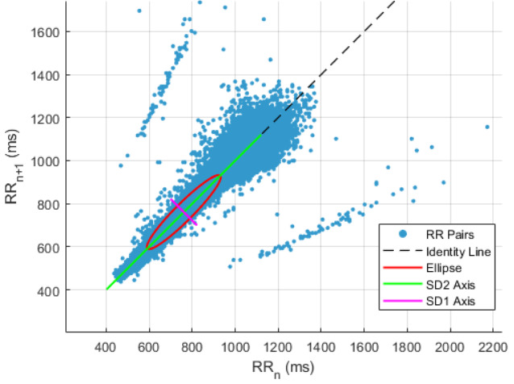

By Paavo Nyländen
18 Jun 2025
Heart rate variability (HRV) refers to the small fluctuations in the time intervals between consecutive heartbeats. While it may seem like our hearts beat with a steady rhythm, the timing between beats actually changes from moment to moment. This variability isn’t just random noise—it reflects the intricate balance between the sympathetic and parasympathetic branches of the autonomic nervous system, which regulate our body’s responses to stress and recovery. When we’re calm and well-rested, the parasympathetic system dominates, slowing the heart and increasing HRV. During periods of stress—whether due to intense exercise, psychological pressure, or illness—the sympathetic system takes over, accelerating the heart and decreasing HRV. As such, HRV serves as a dynamic indicator of the body’s readiness to handle physical and mental demands.
HRV can be measured using various methods, with the gold standard being an electrocardiogram (ECG), which directly records the electrical activity of the heart and provides precise data on the intervals between beats. However, advances in technology have made it possible to track HRV using consumer-grade wearables such as smartwatches, fitness trackers, and chest straps. These devices typically use optical sensors (PPG) or electrode-based systems to estimate HRV, offering a convenient and accessible option for daily monitoring. While wearables can provide reliable HRV readings—particularly during periods of rest or sleep—their accuracy tends to decline during strenuous physical activity, where movement, sweat, and changes in heart rhythm can introduce noise and reduce measurement precision compared to ECG.
Several time-domain metrics are commonly used to quantify HRV, each offering insight into different aspects of autonomic function. SDNN (Standard Deviation of NN intervals) reflects the overall variability in heartbeats over a recording period and captures both sympathetic and parasympathetic influences. SDANN (Standard Deviation of the Average NN intervals) calculates the standard deviation of average intervals taken over short segments (typically 5-minute periods) across a 24-hour period, highlighting longer-term trends in variability. RMSSD (Root Mean Square of Successive Differences) measures the square root of the mean of the squares of differences between adjacent NN intervals; it is especially sensitive to short-term variations and is a reliable indicator of parasympathetic activity. pNN50 represents the percentage of successive NN intervals that differ by more than 50 milliseconds, also serving as a marker of parasympathetic function.
One way to visualize heart rate variability is through a Poincaré plot—a scatterplot where each heartbeat interval (usually the time between two R-peaks on an ECG) is plotted against the next consecutive interval. This creates a cloud of points that illustrates the pattern of variability in heart rhythms. Two key metrics derived from the Poincaré plot are the standard deviations SD1 and SD2. SD1 reflects short-term variability, capturing the width of the point cloud perpendicular to the line of identity; it is heavily influenced by parasympathetic activity. SD2, on the other hand, represents long-term variability and corresponds to the length of the cloud along the line of identity. A tighter shape indicates lower variability and increased physiological stress, while a more dispersed shape suggests greater variability and better autonomic balance. Here is an example image of a Poincaré plot:
The application of HRV in exercise training has been widely studied. In a recent review, Yang et al. (2024) examined the effects of various exercise modalities on HRV and found that high-intensity interval training (HIIT) was the most effective in improving key HRV markers such as SDNN and RMSSD. This is noteworthy, as reductions in these measures have been linked to increased risk of cardiac morbidity and mortality. Kaufmann and colleagues (2023) explored whether HRV thresholds could be used to prescribe exercise intensity in endurance sports. These thresholds would ideally correspond to established physiological markers like lactate and ventilatory thresholds, offering a simple, non-invasive alternative for guiding training. HRV thresholds can be derived from straightforward time-domain measures like RMSSD, or through more complex methods such as frequency-domain analysis or detrended fluctuation analysis—each offering a different lens for interpreting RR interval data. However, the researchers found considerable variability in HRV-derived thresholds, with outcomes heavily influenced by the method of calculation and limited by small sample sizes. As a result, HRV is not currently reliable enough to serve as a standalone tool for determining endurance training intensity thresholds.
HRV provides a valuable glimpse into the body's balance between stress and recovery. With increasing accessibility through wearables, HRV has become a practical tool for tracking well-being, recovery, and training readiness. However, it's important to remember that HRV is influenced by many factors so it should not be interpreted in black-and-white terms. While its precision for certain applications remains limited, HRV holds strong potential as part of a broader, individualized approach to health and performance.
El-Malahi O, Mohajeri D, Mincu R, Bäuerle A, Rothenaicher K, Knuschke R, Rammos C, Rassaf T, Lortz J. Beneficial impacts of physical activity on heart rate variability: A systematic review and meta-analysis. PLoS One. 2024 Apr 5;19(4):e0299793. doi: 10.1371/journal.pone.0299793. PMID: 38578755; PMCID: PMC10997132.
Georgiou K, Larentzakis AV, Khamis NN, Alsuhaibani GI, Alaska YA, Giallafos EJ. Can Wearable Devices Accurately Measure Heart Rate Variability? A Systematic Review. Folia Med (Plovdiv). 2018 Mar 1;60(1):7-20. doi: 10.2478/folmed-2018-0012. PMID: 29668452.
Kaufmann S, Gronwald T, Herold F, Hoos O. Heart Rate Variability-Derived Thresholds for Exercise Intensity Prescription in Endurance Sports: A Systematic Review of Interrelations and Agreement with Different Ventilatory and Blood Lactate Thresholds. Sports Med Open. 2023 Jul 18;9(1):59. doi: 10.1186/s40798-023-00607-2. PMID: 37462761; PMCID: PMC10354346.
Yang F, Ma Y, Liang S, Shi Y, Wang C. Effect of Exercise Modality on Heart Rate Variability in Adults: A Systematic Review and Network Meta-Analysis. Rev Cardiovasc Med. 2024 Jan 9;25(1):9. doi: 10.31083/j.rcm2501009. PMID: 39077654; PMCID: PMC11262364.